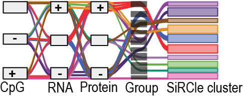

Package info
SUMMARY
Abstract
Installing SiRCle
Reproducibility
Notebook RCM Part 1 ccRCC Figure 1
Notebook RCM Part 1 ccRCC Figure 2
Notebook RCM Part 1 ccRCC Figure 3
Notebook RCM Part 1 ccRCC Figure 4
Notebook RCM Part 1 ccRCC Figure 5
Notebook RCM Part 1 ccRCC Figure 5b
Notebook RCM Part 1 ccRCC S.Figure 1
Notebook RCM Part 1 PanCan Figure 1
Notebook RCM Part 1 PanCan Figure 2
Notebook RCM Part 1 PanCan Figure 3
Notebook RCM Part 1 PanCan Figure 4
Notebook RCM Part 1 PanCan S.Figure 1
Notebook VAE Part 2 ccRCC Figure 4
Notebook RCM Part 1 PanCan Figure 5
Notebook VAE Part 2 ccRCC Figure 6
Notebook VAE Part 2 PanCan Figure 4
Notebook VAE Part 2 PanCan Figure 5
Notebook VAE Part 2 PanCan Figure 6
Notebook Part 3 Comparison Figure 1
Notebook Part 4 ITH Processing
Notebook Part 4 ITH S.Figure 1
Notebook Part 4 ITH Analysis
Notebook Metabolism ccRCC
Notebook for MOMIX benchmarking
Notebook for RNA processing part 1
Notebook for Clinical processing
Protein Imputation
Notebook for Protein processing
Notebook for Methylation processing
Notebook for Phospho-proteoimcs peptide processing
Notebook for RNA processing part 2
Notebook for Generating datasets
Tumour vs normal comparison
Notebook for Filtering CpGs to Genes
Notebook for performing SiRCle clustering
ORA for SiRCle clusters
Notebook for Over Representation Analysis Visualisation for SiRCle
Notebook for TF analysis
Notebook for VAE integration
GSEA on the integrated VAE value
Set up single cell files
Notebook for Single cell analysis using integrated genes Stage IV vs Stage I
Notebook for Single cell analysis using integrated genes for PBRM1 vs BAP1
Notebook for metabolomics analysis using publicly available data
Notebook for RCM data with metabolic pathways
Notebook for VAE data with metabolic pathways
About
FAQ
Change log
References
SiRCle_multiomics_integration
Index
Edit on GitHub
Index